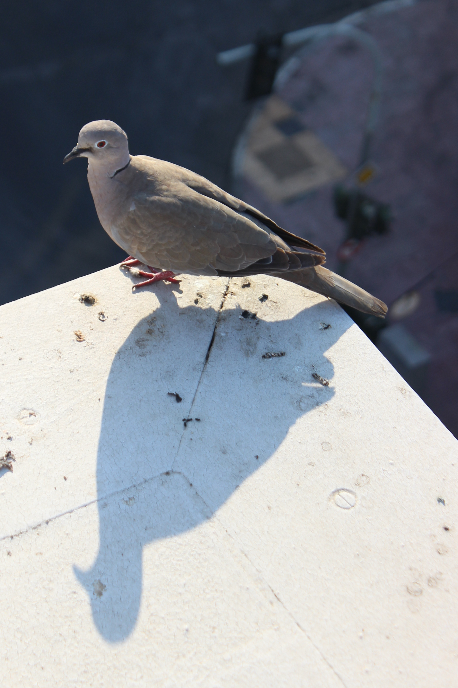
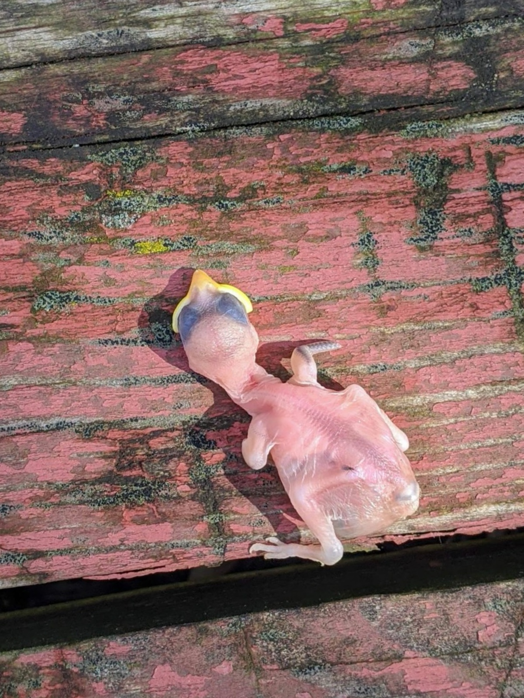

Untitled (Doorway), 2021
Someone I love went far away, and came back, and went again. These photographs were made in the years in between. What does it mean to leave, if you keep coming back? What does it take to finally choose?

Untitled (Dove), 2023
Untitled (Shopping Carts), 2022

Untitled (Hatchling), 2021
Untitled (Staircase), 2026